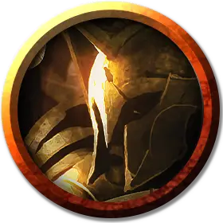

Сетесский гоплит
Setessan Hoplite
Средний Гуманоид, любое мировоззрение

Класс Доспеха 16 (кожаный доспех, щит)
Хиты 58 (9к8 + 18)
Скорость 30 футов
| мод | спас | ||
|---|---|---|---|
| СИЛ | 14 | +2 | +2 |
| ЛОВ | 16 | +3 | +5 |
| ТЕЛ | 14 | +2 | +2 |
| мод | спас | ||
|---|---|---|---|
| ИНТ | 13 | +1 | +1 |
| МДР | 16 | +3 | +5 |
| ХАР | 11 | +0 | +0 |
Навыки Акробатика +5, Восприятие +5, Выживание +5
Чувства пассивное Восприятие 15
Языки Общий
Опасность 4 (1100 опыта)
Бонус мастерства +2
Особенности
Тактика стаи. Гоплит совершает с преимуществом броски атаки по существу, если как минимум один союзник гоплита находится в пределах 5 футов от этого существа, и этот союзник дееспособен.
Действия
Мультиатака. Гоплит совершает две атаки Скимитаром или две атаки Длинным луком.
Скимитар. Рукопашная атака оружием: +5 к попаданию, досягаемость 5 футов, одна цель. Попадание: 6 (1к6 + 3) рубящего урона.
Длинный лук. Дальнобойная атака оружием: +5 к попаданию, дистанция 150/600 футов, одна цель. Попадание: 7 (1к8 + 3) колющего урона плюс 10 (3к6) урона ядом.
Описание
Большинство сетесскийский гоплитов начинают свое обучение в качестве охотников, что делает их опытными в передвижении по лесам и искусными как в партизанской тактике, так и в стрельбе из лука. Их стратегии часто подражают любимым слугам Нилеи — особенно диким зверям, таким как волки и рыси. Обычно несколько солдат атакуют врага, в то время как остальные используют отвлечение внимания противника.
Гоплиты
Гоплиты - это высококвалифицированные воины, сведущие не только в стратегии и тактике, но и в прославлении духа воина, основы идеала, который создает нерушимую связь между членами воинского подразделения. В бою гоплиты обычно работают группами и используют скоординированную тактику, чтобы одерживать победы.
В таблицах "Отряды гоплитов" представлены виды названий, используемых отрядами гоплитов, родом из великих полисов Тероса. Подумайте об использовании этих названий для вооружённых сил, с которыми персонажи сталкиваются во время своих приключений или частью которых они когда-то были.
Названия отрядов Сетесских гоплитов
| к8 | Название |
| 1 | Стрелы Нилеи |
| 2 | Наблюдатели |
| 3 | Клыки Офиса |
| 4 | Быстрые мечи |
| 5 | Волки Караметры |
| 6 | Защитники Рощи |
| 7 | Бронзовые клинки |
| 8 | Шакалы |